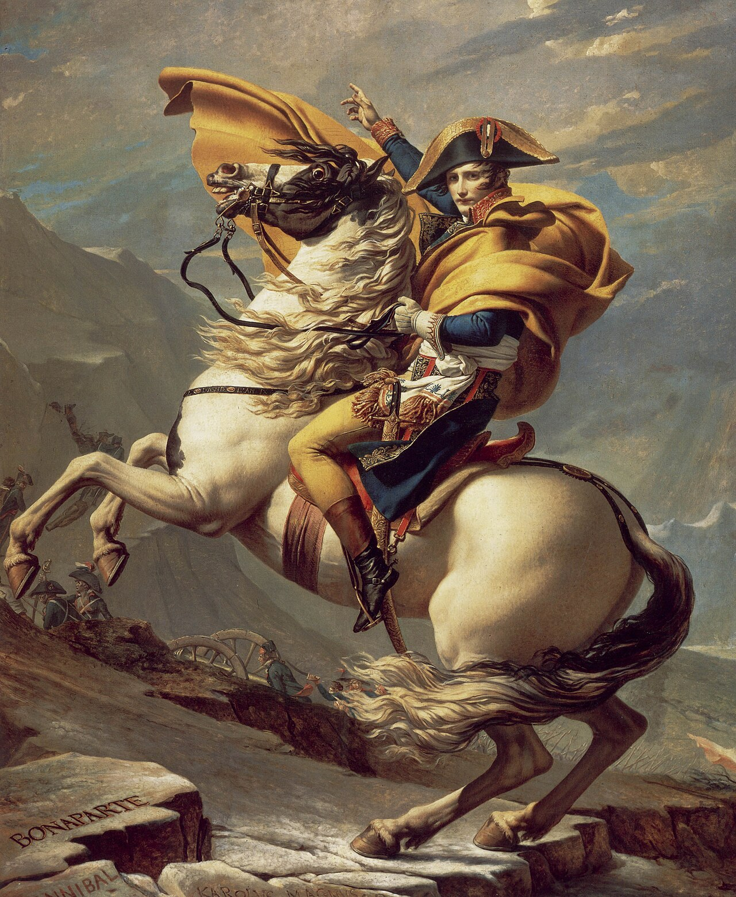

Napoleon Napoleon Bonaparte (fr. Napoléon Bonaparte, franska: [napɔleɔ̃ bɔnɑpaʁt]), född som Napoleone di Buonaparte, (italienska: [napoleˈoːne di ˌbwɔnaˈparte]), men tog namnet Napoleon I under sin regeringstid som kejsare, född 15 augusti 1769 i Ajaccio, Korsika, död 5 maj 1821 på Sankt Helena, Sydatlanten, var Fransmännens kejsare från 18 maj 1804 till 6 april 1814 och återigen (under de hundra dagarna) från 20 mars till 22 juni 1815.[1]

Som fältherre för den franska militärmakten erövrade och härskade han över större delen av västra och centrala Europa och innehade ett par år även makten i Egypten. Det misslyckade fälttåget mot Ryssland försvagade sedan hans position, vilket så småningom ledde till det slutgiltiga nederlaget vid slaget vid Waterloo och hans fall. Sedan Napoleon förlorat slaget i Waterloo blev han avsatt och förvisad till den isolerade ön Sankt Helena mitt ute på Atlanten. Där dog han sex år senare.
Få personer i historien har blivit mer omtalade och föremål för forskning än Napoleon. Hans historiska betydelse är omdiskuterad. De olika synsätten på honom har ofta skapat debatt och oenighet. I Frankrike betraktas han av många som en nationalhjälte. Han framhävs först och främst som en stor fältherre och militär strateg, medan andra ser honom mer som en politiker och reformator. Av andra betraktas han som en stor tyrann. Napoleon är begravd i Hôtel des Invalides i Paris.
| Född | Död | Regeringstid | Företrädare | Efterträdare |
|---|---|---|---|---|
| 15 augusti 1769 Kungariket Frankrike Ajaccio, Korsika, Frankrike | 5 maj 1821 (51 år)Förenade kungariket Storbritannien och Irland Longwood, Sankt Helena | 18 maj 1804 – 6 april 1814 20 mars 1815 – 22 juni 1815 | Franska konsulatet | Ludvig XVIII (de facto) Napoleon II (de jure) |